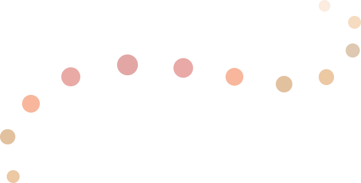

The United States oF America
In American English,
the vowel [a] is
noticeably higher in
elevation than in the
British version
The sound [r] after
the vowel at the end
of the word, as well as
before the consonant,
is pronounced without
tongue trembling
The sounds [i], [o], [u]
before non-trembling
[r] are pronounced
with a higher elevation
of the tongue than in
England
The diphthongs [ou]
and [ei] are very
poorly developed, for
example, the word fate
is pronounced [fe:t]
The combination
[ju] after dental in
most cases is
simplified to [u]. For
example, duty
['du:ti]
There is a weakening
of articulation when
pronouncing the
sound [t], for
example, in the
words matter, better
Requent formation of verbal nouns
(to research – to investigate, a research -
research)

The going to or will form is used, but
the shall form is never used
The words slow and real are used, and
slowly and really are practically not used
From irregular verbs only unnecessary problems,
- Americans are sure. Therefore, many verbs that
are incorrect in British English have become
regular verbs in American
The United States is sometimes described as a
"melting pot" into which different peoples have
added their own flavor or taste, forming one great
American culture. Just as the cultures of the whole
world have influenced the United States, now
American culture affects the whole world. The
country does not have one official language, although
31 out of 50 states have granted this status to English.
More than 90% of the US population speaks and
understands English and most official business is
conducted in this language

After learning all this
information you can
take the test

START TEST